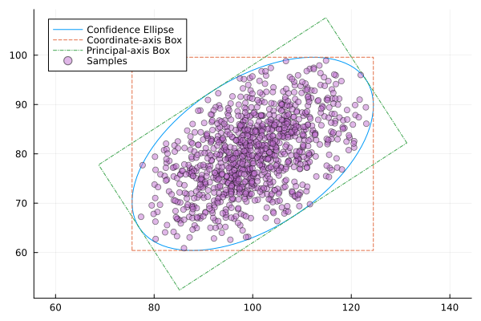

Ellipsoidal uncertainty with ConfidenceMvNormal
This tutorial introduces the ConfidenceMvNormal distribution, which models uncertainty as a multivariate normal truncated to an ellipsoid containing a chosen fraction of probability mass. It is especially useful when you want to control how conservative the uncertainty set is.
Setup
using JuMP
import LinearDecisionRules
import HiGHS
import Distributions
import Random
import LinearAlgebra
import PlotsWhat is ConfidenceMvNormal?
Suppose demand follows a multivariate normal distribution $d \sim \mathcal{N}(\mu, \Sigma)$. In practice we may not want to plan for the entire (unbounded) support. ConfidenceMvNormal(μ, Σ, α) restricts the uncertainty to an ellipsoid centred at $\mu$ that contains fraction $\alpha$ of the probability mass:
\[E_{\alpha} = \{\, x : (x - \mu)' \Sigma^{-1} (x - \mu) \leq \rho^2(\alpha) \,\}\]
where $\rho^2(\alpha) = \text{quantile}(\chi^2_d, \alpha)$.
The distribution provides the LDR framework with:
- Mean – equal to $\mu$ (the ellipsoid is symmetric)
- Covariance – a scalar multiple of $\Sigma$ (smaller than $\Sigma$ because the tails are cut)
- Finite bounds – required by the framework, given by the axis-aligned box that is tangent to the ellipsoid
Inspecting the distribution
μ = [100.0, 80.0]
Σ = [
100.0 40.0
40.0 64.0
]
dist_95 = LinearDecisionRules.ConfidenceMvNormal(μ, Σ, 0.95)
println("α = 0.95")
println(" Ellipsoid radius ρ = ", round(dist_95.ρ; digits = 4))
println(" Mean = ", Distributions.mean(dist_95))
println(
" Covariance = ",
round.(Distributions.cov(dist_95); digits = 2),
)
println(" Component bounds:")
for i in 1:2
lo = round(Distributions.minimum(dist_95)[i]; digits = 2)
hi = round(Distributions.maximum(dist_95)[i]; digits = 2)
println(" demand[$i] ∈ [$lo, $hi]")
endα = 0.95
Ellipsoid radius ρ = 2.4477
Mean = [100.0, 80.0]
Covariance = [84.23 33.69; 33.69 53.91]
Component bounds:
demand[1] ∈ [75.52, 124.48]
demand[2] ∈ [60.42, 99.58]As $\alpha$ grows, the ellipsoid expands, so the covariance approaches $\Sigma$ and the bounds widen:
for α in [0.50, 0.80, 0.95, 0.99]
d = LinearDecisionRules.ConfidenceMvNormal(μ, Σ, α)
s = round(Distributions.cov(d)[1, 1] / Σ[1, 1]; digits = 3)
println("α = $α → cov scaling = $s (ρ = $(round(d.ρ; digits=2)))")
endα = 0.5 → cov scaling = 0.307 (ρ = 1.18)
α = 0.8 → cov scaling = 0.598 (ρ = 1.79)
α = 0.95 → cov scaling = 0.842 (ρ = 2.45)
α = 0.99 → cov scaling = 0.953 (ρ = 3.03)An inventory problem with ellipsoidal demand
Two products have correlated demand. Before demand is revealed a retailer decides how many units to stock (buy); afterwards they sell as much as possible (sell).
| Parameter | Value |
|---|---|
| Buy cost | $10 |
| Sell price | $15 |
| Salvage value | $5 |
buy_cost = 10.0
sell_price = 15.0
salvage_val = 5.0
function solve_inventory(α)
dist = LinearDecisionRules.ConfidenceMvNormal(μ, Σ, α)
ldr = LinearDecisionRules.LDRModel(HiGHS.Optimizer)
set_silent(ldr)
set_attribute(ldr, LinearDecisionRules.SolveDual(), true)
@variable(ldr, buy[1:2] >= 0, LinearDecisionRules.FirstStage)
@variable(ldr, sell[1:2] >= 0)
@variable(ldr, salvage[1:2] >= 0)
@variable(
ldr,
demand[1:2] in LinearDecisionRules.Uncertainty(; distribution = dist),
)
for i in 1:2
@constraint(ldr, sell[i] + salvage[i] <= buy[i])
@constraint(ldr, sell[i] <= demand[i])
end
@objective(
ldr,
Max,
sum(
-buy_cost * buy[i] +
sell_price * sell[i] +
salvage_val * salvage[i] for i in 1:2
),
)
optimize!(ldr)
return (
buy = [LinearDecisionRules.get_decision(ldr, buy[i]) for i in 1:2],
primal = objective_value(ldr),
dual = objective_value(ldr; dual = true),
)
endsolve_inventory (generic function with 1 method)Effect of the confidence level $\alpha$
A smaller $\alpha$ means a tighter uncertainty set: the planner expects demand to stay close to the mean and buys less speculatively.
for α in [0.50, 0.80, 0.90, 0.95, 0.99]
r = solve_inventory(α)
println(
"α = $α buy = $(round.(r.buy; digits=1)) " *
"primal = $(round(r.primal; digits=2)) " *
"dual = $(round(r.dual; digits=2))",
)
endα = 0.5 buy = [88.2, 70.6] primal = 794.03 dual = 876.54
α = 0.8 buy = [82.1, 65.6] primal = 738.53 dual = 870.02
α = 0.9 buy = [78.5, 62.8] primal = 706.86 dual = 868.79
α = 0.95 buy = [75.5, 60.4] primal = 679.7 dual = 869.03
α = 0.99 buy = [69.7, 55.7] primal = 626.86 dual = 871.72Higher $\alpha$ → wider ellipsoid → demand can be further from the mean → optimal buy quantities change to accomodate more scenarios (more conservative solution).
Bounds: box approximation of the ellipsoid
The LDR framework requires finite minimum and maximum for each uncertainty variable. ConfidenceMvNormal provides the tightest axis-aligned box that contains the ellipsoid:
\[\mu_k - \rho\sqrt{\Sigma_{kk}} \;\leq\; d_k \;\leq\; \mu_k + \rho\sqrt{\Sigma_{kk}}\]
These are outer (conservative) bounds on the actual ellipsoid. A future extension could use rotated box bounds aligned with the principal axes of $\Sigma$, which would be tighter for highly correlated distributions.
function draw_ellipse(d::LinearDecisionRules.ConfidenceMvNormal)
@assert length(d) == 2
L = d.L
U, sigma, _ = LinearAlgebra.svd(L)
μ = d.μ
ρ = d.ρ
# Confidence ellipsoid: image of the ball of radius ρ under the linear map L
θ = range(0, 2π; length = 100)
ellipse = [μ .+ ρ .* (L * [cos(t); sin(t)]) for t in θ]
p = Plots.plot(
first.(ellipse),
last.(ellipse);
label = "Confidence Ellipse",
aspect_ratio = :equal,
)
# Axis-aligned bounding box
xmin, ymin = Distributions.minimum(d)
xmax, ymax = Distributions.maximum(d)
Plots.plot!(
p,
[xmin, xmax, xmax, xmin, xmin],
[ymin, ymin, ymax, ymax, ymin];
label = "Coordinate-axis Box",
linestyle = :dash,
)
# Box aligned with principal axes
points = [[-ρ, -ρ], [-ρ, ρ], [ρ, ρ], [ρ, -ρ], [-ρ, -ρ]]
points = [μ .+ U * (sigma .* p) for p in points]
Plots.plot!(
p,
[first.(points)],
[last.(points)];
label = "Principal-axis Box",
linestyle = :dashdot,
)
# Sample points from the distribution
rng = Random.MersenneTwister(42)
samples = [rand(rng, d) for _ in 1:1000]
Plots.scatter!(
p,
first.(samples),
last.(samples);
label = "Samples",
alpha = 0.5,
)
# Compare the volume of bounding boxes
vol_bbox = prod(Distributions.maximum(d) .- Distributions.minimum(d))
vol_Lbox = 4 * prod(sigma) * ρ^2
println("Volume of coordinate-axis box: $vol_bbox")
println("Volume of principal-axis box: $vol_Lbox")
return p
end
draw_ellipse(dist_95)
What's next?
- See
ConfidenceMvNormalfor the mathematical details - Explore piecewise linear decision rules for tighter primal–dual gaps
- Use advanced constraint-based uncertainty for polytope uncertainty sets